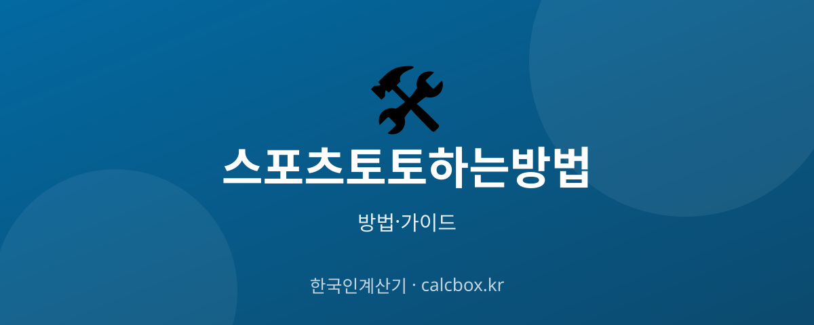

스포츠토토 하는 방법 — 합법 체육진흥투표권 구매 방법과 규칙 안내
국내 유일 합법 스포츠 베팅인 체육진흥투표권(스포츠토토). 어디서 어떻게 구매하는지, 게임 방식과 규칙은 무엇인지 정확한 정보를 정리했습니다.

스포츠토토 — 핵심부터 정리
스포츠토토는 국민체육진흥공단이 발행하고 정식 사업자가 운영하는 합법 체육진흥투표권입니다. 정해진 판매점이나 공식 온라인(베트맨)에서만 구매할 수 있습니다.
기본 흐름은 게임 종류 선택 → 경기·결과 예상 → 구매 금액 지정 → 발권입니다. 여기서는 도박을 권하는 것이 아니라, 합법 범위 내 구매 방법과 규칙을 안내합니다.
스포츠토토 구매 방법 (단계별)
- 합법 판매 채널 확인 — 전국의 공식 스포츠토토 판매점 또는 공식 온라인 사이트(베트맨)에서만 구매가 가능합니다. 그 외 사설 사이트는 모두 불법이며 법적 처벌 대상입니다.
- 게임 종류 이해 — 결과를 맞히는 '승부식(고정환급률)'과 점수·기록을 예상하는 '기록식' 등이 있습니다. 게임마다 예상 방식과 환급 구조가 다르므로 규칙을 먼저 읽습니다.
- 발매 대상 경기 선택 — 발매지(구매표)나 온라인 화면에서 해당 회차에 발매 중인 축구·야구·농구 등 경기를 확인하고 예상할 경기를 고릅니다.
- 예상 결과 표기 — 승·무·패나 스코어 등 규칙에 맞게 예상을 표기합니다. 여러 경기를 조합하는 방식은 적중 난도가 올라가는 대신 배당이 커지는 구조입니다.
- 구매 금액 지정·발권 — 1회·1인 구매 한도 등 규정 범위 안에서 금액을 정해 판매점에서 발권하거나 온라인에서 구매를 확정합니다. 발권된 투표권과 회차 정보를 보관합니다.
- 결과 확인·환급 — 경기 종료 후 공식 채널에서 당첨 여부를 확인합니다. 적중 시 정해진 기간 안에 판매점·지정 창구에서 환급받습니다(기간 경과 시 소멸).
알아두면 좋은 팁
- 반드시 공식 판매점 또는 공식 온라인(베트맨)에서만 구매하세요. '토토 사이트'를 표방한 사설 사이트는 전부 불법 도박이며 이용자도 처벌받을 수 있습니다.
- 만 19세 미만 청소년은 구매할 수 없습니다.
- 구매 전 게임 규칙, 환급률, 발매·마감 시간, 당첨금 지급 기한을 확인하세요. 규칙을 모르면 표기 실수로 무효가 될 수 있습니다.
- 잃어도 괜찮은 소액 한도를 미리 정하고 그 안에서만 즐기세요. 손실을 만회하려는 '추격 베팅'은 피해야 합니다.
- 당첨은 확률에 기반하며 원금 손실이 기본 전제입니다. 수익 수단이 아니라 오락으로만 접근하세요.
⚠️ 스포츠토토는 사행성이 있는 활동으로 과몰입·중독 위험이 있습니다. 정해진 예산 안에서만 즐기고, 조절이 어렵다고 느끼면 한국도박문제예방치유원(국번 없이 1336) 상담을 받으세요. 미성년자 구매와 사설 사이트 이용은 불법입니다.
합법 구매처와 도박 문제 상담
합법 체육진흥투표권은 공식 판매점과 온라인 베트맨에서만 구매할 수 있습니다. 그 외 '사설 토토'는 모두 불법입니다.
도박으로 인한 어려움이 있다면 한국도박문제예방치유원 상담 전화 1336(국번 없이)으로 도움을 받을 수 있습니다.
자주 묻는 질문 (FAQ)
Q. 스포츠토토는 합법인가요?
국민체육진흥공단이 발행하고 정식 사업자가 운영하는 체육진흥투표권(스포츠토토)은 합법입니다. 다만 공식 판매점과 공식 온라인(베트맨)에서 구매한 경우에 한하며, 사설 토토 사이트는 모두 불법입니다.
Q. 온라인으로도 스포츠토토를 살 수 있나요?
공식 온라인 사이트인 베트맨을 통해 구매할 수 있습니다. 그 외 도박 사이트는 합법 채널이 아니며, 이용 시 이용자도 처벌 대상이 될 수 있으니 주의하세요.
Q. 미성년자도 스포츠토토를 살 수 있나요?
아닙니다. 체육진흥투표권은 만 19세 미만 청소년에게 판매가 금지되어 있습니다. 구매 시 연령 확인이 이루어집니다.